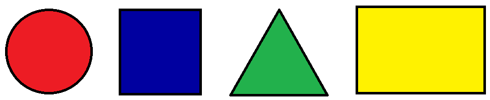

Каждый человек отдает предпочтение какому-то цвету в одежде, обстановке, цвете автомобиля и т.д. Но в любом случае цвет, которому вы отдаете предпочтение, многое может рассказать о вашем характере и эмоциональном складе.
Выберите какому цвету Вы придаете предпочтение:
